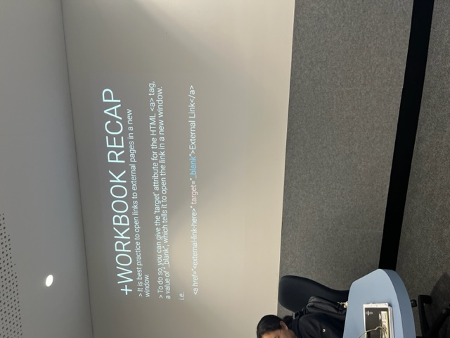
➼ general feedback for workbooks.(img credit: me)
➼ from this general feedback, i made sure to caption images more specifically and assign titles where needed. in my code, i got more specific about what copilot wrote for me. i also ensured that hyperlinks had black targets for user friendliness

♥ lights and electronics for cars at a swap meet. the way they were laid out struck me - they were neat and looked so shiny against the blue. i couldn't help but feel how digital it was (img credit: me)

♥ a workshop on how to organise things; this made me think about organising things categorically on my site, which is surprisingly difficult (img credit: me)

♥ i created shadow effects on hover, at this stage they were far too choppy (img credit: me)
♥ a big part of the feedback i recieved was that my images should have an enlarge feature, so this is what i started working on. i needed to also create a hover effect to indacte they can be enlarged

♥ these shadows soon became too clunky when i offset my grid (img credit: me)

♥ i used a scaling effect instead, which was less clunky. i gave the text a white drop shadow if it overlapped dark images when it enlarged (img credit: me)

♥ i attempted creating an enlarge feature, but struggled with its position and movement (img credit: me)

♥ the offset grid was feeling cluttered so i upped the padding. i took it away and put it back many times (img credit: me)
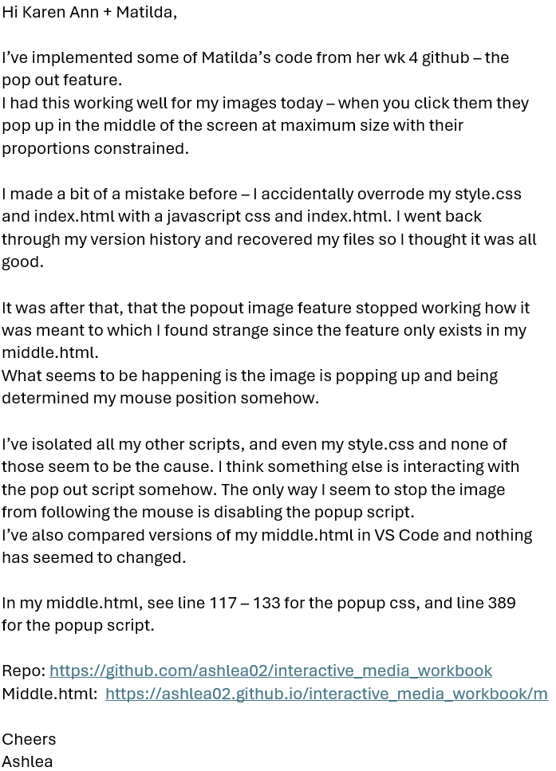
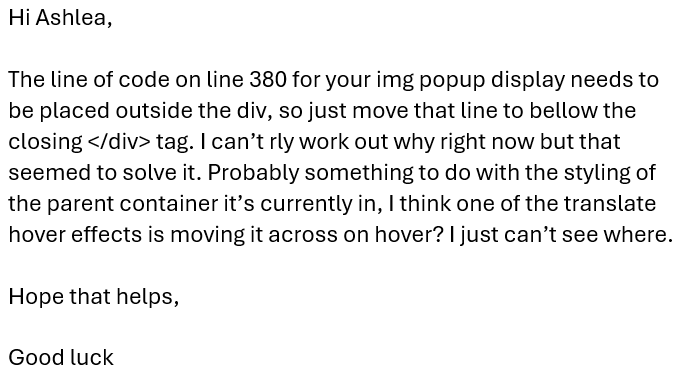
♥ an email thread figuring out why the pop up feature i had finally gotten to work had stopped working (img credit: me)

♥ the pop up grid feature that's altered from matilda's code, using copilot. it finally works! YIPPEE! (img credit: me)
☀︎ other feedback i recieved told me to create a toggle lights feature. i'd tried this previously, but after knowing that it was as simple as disabling a div, this is what i did

☀︎ part of toggling the lights was telling the user how to do it. additionally, this instructional text had to contrast the background so when the T key is pressed, text colour is also toggled (img credit: me)

☀︎ the T key ended up determining three things: flashlight visibility, flashlight sound, and colour of the footer elements (img credit: me)
▶ after encountering autoplay issues with my sound, i found out that a user must click a webpage before autoplay is permitted. i played around with javascripts to gain permission from the user for sound to be played but soon realised it was easier to have them click a dummy button which then directed them to the rest of my site.

▶ Autoplay policy in Chrome, François Beaufort, blog (img credit: me)

▶ on my index.html, i designed a simple button with hover effects. it takes the user to home.html, whilst gaining that 'click' needed for autoplay permissions (img credit: me)

▶ i decided on creating a landing page that ensures the user allows sound (img credit: me)
☀︎ other feedback i recieved told me to create a toggle lights feature. i'd tried this previously, but after knowing that it was as simple as disabling a div, this is what i did
☀︎ the T key ended up determining three things: flashlight visibility, flashlight sound, and colour of the footer elements (img credit: me)
☀︎ part of toggling the lights was telling the user how to do it. additionally, this instructional text had to contrast the background so when the T key is pressed, text colour is also toggled (img credit: me)
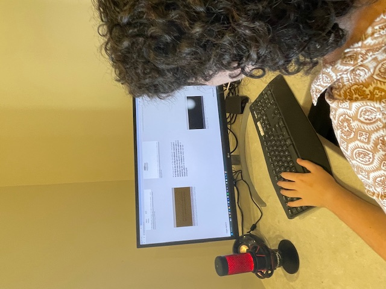
☀︎ very (not) serious website testing on user (brother forced to sit and look). i had to changee the label for the toggle lights to make it clear the T key is used. (img credit: me)
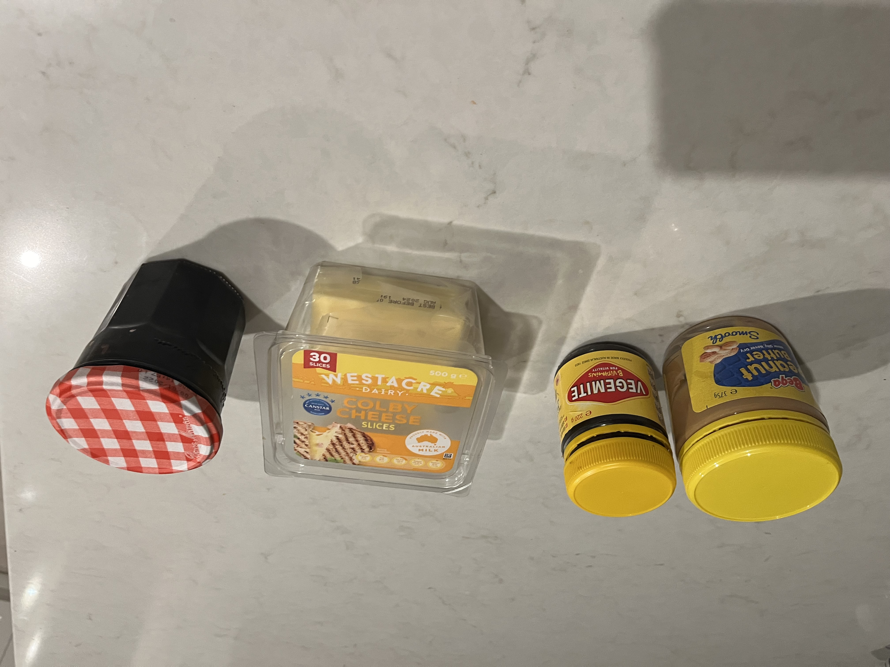
⚄ choices laid out, each assigned a number one to four (img credit: me)
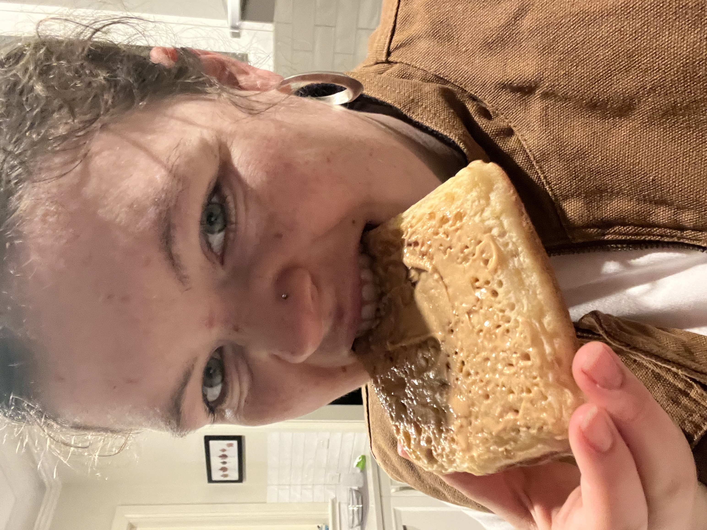
⚄ peanut butter determined by siri. i was not having a good morning at this point. i just wanted vegemite (img credit: me)
⚄ randomisation experiment - i decided to ramdomise the toppings on my toast. it made my day worse :(
★ randomising the position of text is something p5.js allowed me to do, and it made the navigation of the home page unique every time the user visits.

★ failed position randomisation trial, the words were leaving the viewport. the default (img credit: me)

★ i linked previously set hover styles to my javascript (img credit: me)

★ the words were moving in the same direction and speed, i knew i could do better (img credit: me)

★ the words were moving at different speeds but from the same point (img credit: me)

★ these words are too fast to catch (img credit: me)

👁 luminous, state library, 2024. this exhibition is nothing to do with interactivity - it is very typographical. something i enjoyed was the connection between the source material and the exhibition design choices. (img credit: me)

👁 luminous, state library, 2024. (img credit: me)

👁 luminous, state library, 2024. (img credit: me)

👁 luminous, state library, 2024. (img credit: me)
❞ co-pilot was a core part of my work flow. i asked it many many questions, follow up questions and copied lots of code, often tweaking it. i wanted to make a script that read the questions i asked it, to play on a loop on my site.

❞ a javascript that i almost got working, it cut off after a certain amount of words, and I couldn't get it to activate in an iframe, so I linked it instead
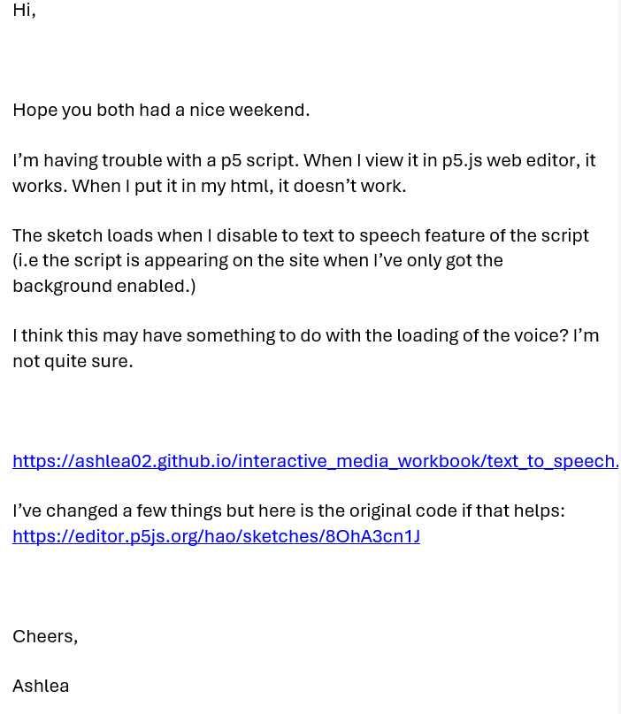
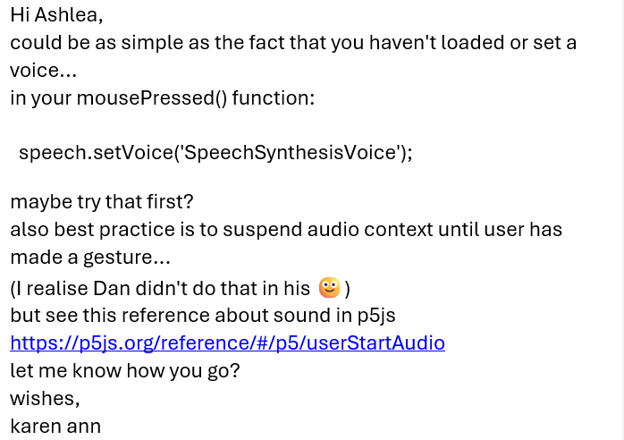
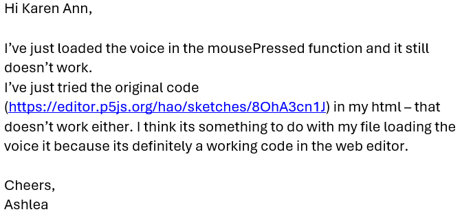
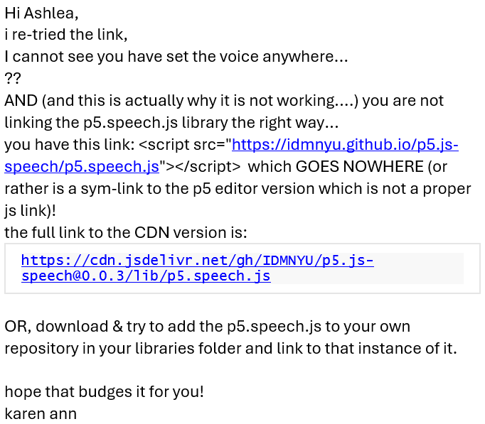
❞ an email thread troubleshooting the text to speech javascript (img credit: me)

🕰 countdown - i tried getting the countdown to move around, but my scripts were interacting incorrectly and created this monstrosity (img credit: me)
🕰 part of my site included the other sections. since 'end' was still not populated with content, i wanted to add a countdown until it would be released.

🕰 countdown - i struggled to apply the correct styling to the countdown that was seen across the rest of my site (img credit: me)

🕰 this is where i gave up on getting the elements to move on my 'end' page, i opted for static instead (img credit: me)
⊙.☉ PANIC! i accidentally overode my style.css and index.html with blank versions
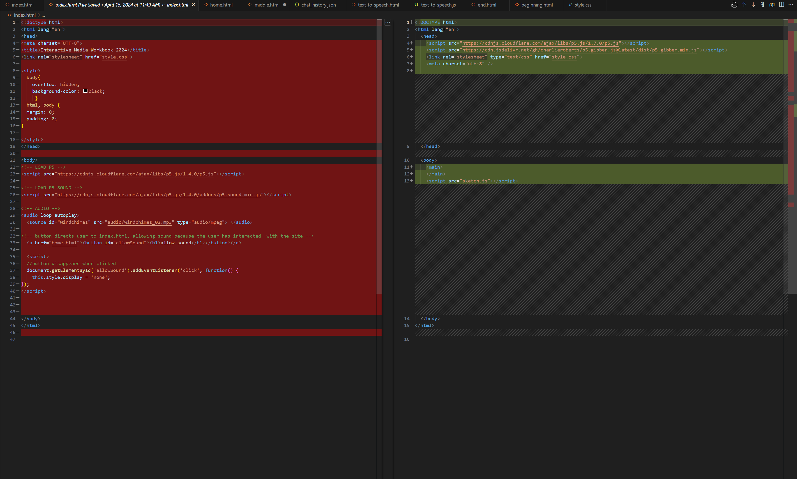
⊙.☉ restoring files with timelines (img credit: me)
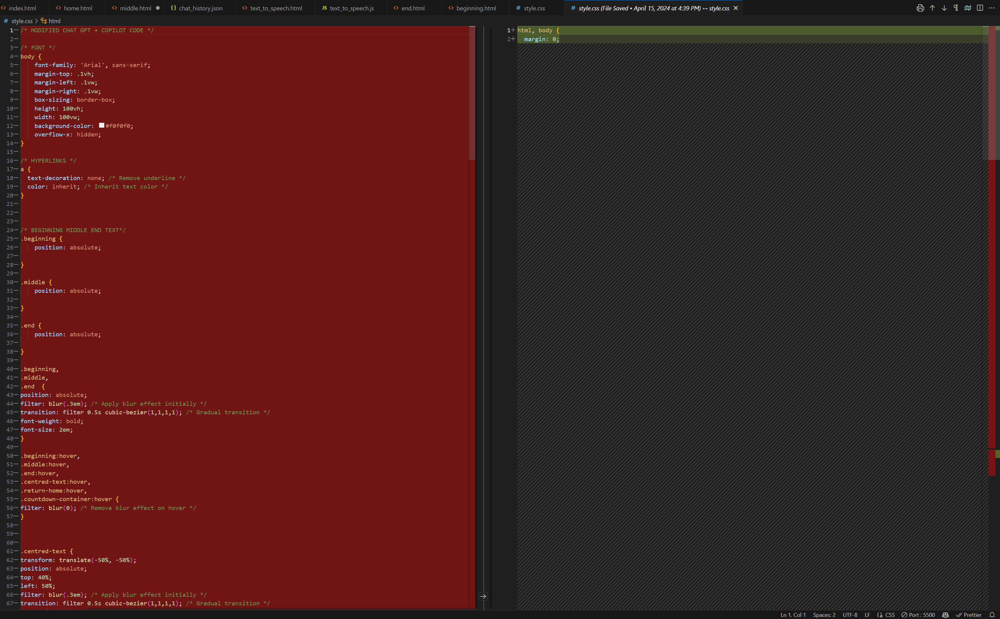
⊙.☉ (img credit: me)

● progress on the pie chart - at one point the segments were overalapping which i later fixed (img credit: me)
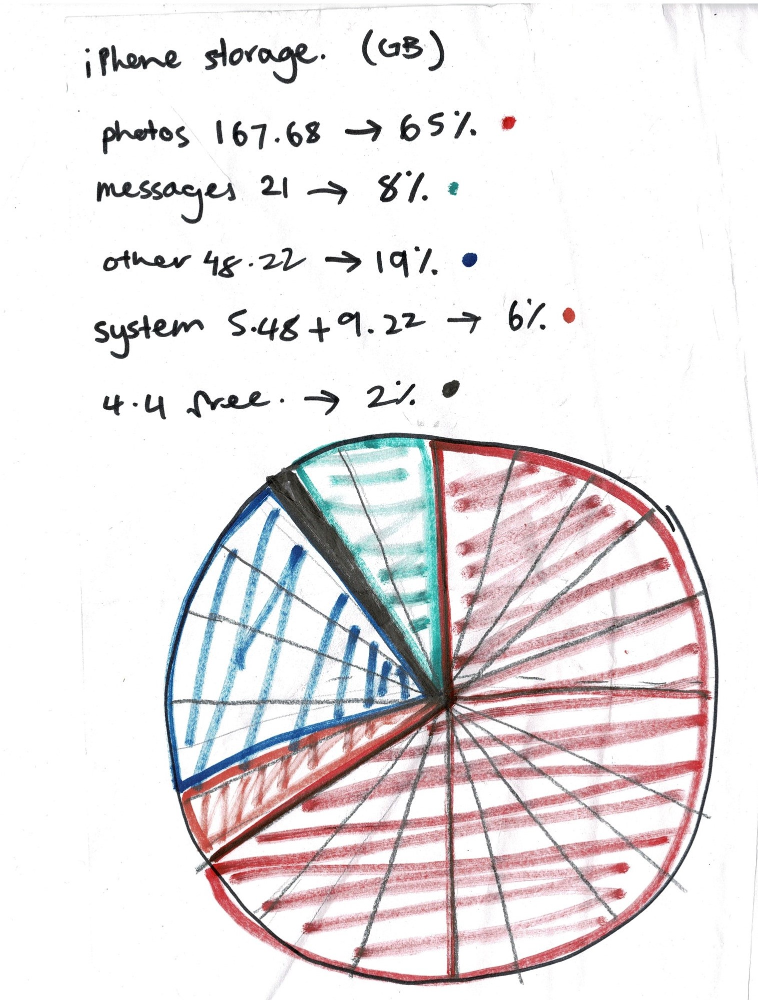
● pie chart sketch.(img credit: me)
✚ once i started doing p5.js sketches, everything became a sketch

✚ stamps at a swap meet, i liked their colours (img credit: me)

✚ car badges at a swap meet (too many for them not to be stolen). this looked exactly like my p5.js sketch, with random fonts, orientations, positioning and sizes (img credit: me)

✚ monument generator, angelo plessas, 2016. what i like about this work is the emotional impact it has on me. sometimes the models make me at peace, other times they are a little scary. this is something i've aimed for with my site (img credit: me)
🎵 this first sketch was fairly simple, i tried making the rhythm feel weird, which was suprisingly difficult (img credit: me)
🎵 in the p5.js libraries, i found the gibber library - and so i played with sound. open all three sketches at once, i dare you!
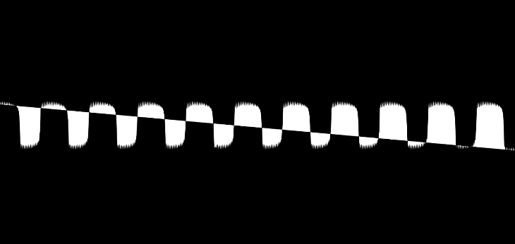
🎵 ! SOUND WARNING ! i pushed this sketch to its limits and then reeled it back in because i's accidentally made whistle tones (img credit: me)

🎵 while the sound on my website is part of the experience, it can drive you crazy. i tried working with a volume function, but couldn't get it to work (img credit: me)
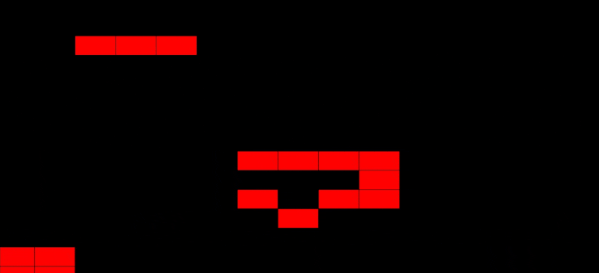
🎵 this one reminds me of the sound for an arcade game, but in a scary way (img credit: me)
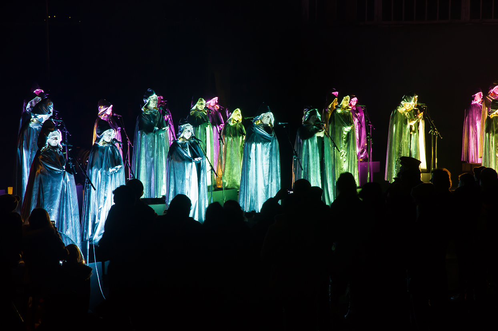
🎵a galaxy of suns, michaela gleave, 2016. i have yet to explore this kind of in depth data driven sound design, but it is somewhere i'd like to go.